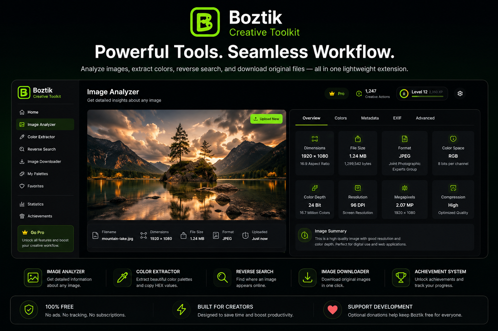

Boztik Creative Toolkit gives photographers, designers, and digital creators instant access to image analysis, color extraction, reverse image search, and original downloads — all without leaving the page you’re working on.
Complete creative tasks in seconds without ever leaving the webpage.
No ads. No tracking. Your workflow stays private and distraction free.
Built for the creative community and supported through optional donations.
Inspect images, extract palettes, reverse-search sources, and download originals without breaking your creative momentum.
Boztik brings the tools you reach for most into one calm, lightweight workspace so you can move from inspiration to delivery without context switching.
Boztik combines professional creative tools into one lightweight browser extension, helping photographers, designers and creators work more efficiently every day.
Instantly inspect image resolution, dimensions, aspect ratio and useful metadata before downloading.
Generate beautiful HEX colour palettes from any image with one click and copy colours instantly.
Quickly locate higher quality versions, original sources and visually similar images.
Download the highest quality image available without leaving the current webpage.
Track your productivity, unlock creator milestones and monitor how much time Boztik saves you.
Created by a freelance photo editor who understands real-world creative workflows.
The AI Creative Assistant will become your intelligent creative companion inside Boztik Creative Toolkit. It will help photographers, designers and content creators work faster by providing AI-powered creative tools directly inside the browser.
From AI prompt generation to image analysis and smart editing suggestions, the assistant will bring practical creative support straight into the browser.
Version 1.1.0 introduces one of the biggest visual upgrades yet, including a refined interface, improved colour extraction, achievement notifications and a refreshed branding experience.

A redesigned palette layout featuring cleaner spacing, better typography, colour percentages, quick copy actions and downloadable palettes.
Milestones now feel more rewarding with polished visuals, smoother progress tracking and preparation for future interactive notifications.
A cleaner logo, improved layout consistency, smoother interactions and a modern user experience throughout the extension.
Boztik Creative Toolkit wasn't created by a large software company—it was built by a freelance photo editor to solve everyday creative challenges.
After years of editing thousands of photographs, I realised creators waste valuable time switching between websites just to analyse images, extract colours or perform reverse searches.
Boztik brings these essential tools together inside your browser, allowing you to stay focused on creating instead of searching for utilities.
Every feature inside Boztik has one purpose: reducing repetitive work. Whether you're a photographer, designer, digital artist or content creator, the toolkit helps you complete common tasks in seconds.
The built-in statistics and achievement system even show how much time you've saved over your creative journey.
Boztik Creative Toolkit is completely free because I believe powerful creative tools should be accessible to everyone. Rather than charging subscriptions or locking features behind paywalls, the project is supported through optional donations from people who find value in using it.
Every contribution helps fund future features, bug fixes, visual improvements and long-term development. Thank you for helping keep Boztik growing.
💚 Support BoztikInstall the extension from the Chrome Web Store and start analysing images, extracting palettes, and speeding up your workflow in minutes.